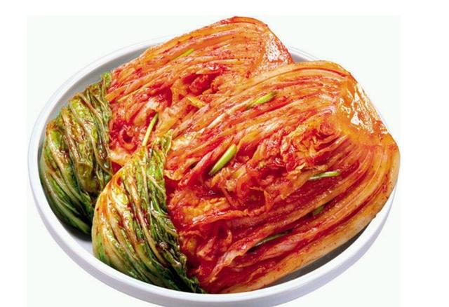

京畿道的代表泡菜是白菜泡菜
其實京畿道的代表泡菜就是我們常看到的泡菜
不管是包肉吃還是放在火鍋吃都是絕對好吃的
那就讓我們看看要怎麼做出好吃又到地的白菜泡菜吧!!
主料：大白菜1200g 蘋果1個 梨1個
輔料：辣椒麵150g 糯米粉50g 姜適量 蒜適量
1.準備做辣椒醬的所需材料，大白菜洗凈後從根部豎切成4半，均勻的抹上一層鹽，醃製8小時至白菜變軟，倒去醃出的水。
再將白菜過一下涼開水或者純凈水，洗去多餘的鹽分後擠干水分備用（過完水後嘗一嘗菜的鹹度，如果覺得偏咸可再用清水泡一會以去除鹹味。）
2.蘋果、梨切成碎末；白蘿蔔刨成絲；蒜、姜切碎末，韭菜洗凈切成段，蝦皮剁碎備用，將魚露倒入辣椒麵中
3.再加入切碎的蘋果、梨、姜蒜末、白蘿蔔絲、韭菜、蝦皮碎、糖、鹽拌勻
糯米粉50克與450克清水攪勻，小火煮成漿糊狀
4.煮好的糯米漿糊倒入辣椒醬中拌勻
5.戴上一次性手套或者套上保鮮袋，將白菜上均勻的抹上辣椒醬（以根部為主，白菜葉子上一帶而過即可）
6.將抹好辣椒醬的白菜從葉子向根部方向捲起，放入乾淨的容器中。室溫發酵一天後放入冰箱冷藏發酵5-7天即可食用
首頁
慶尚道
全羅道
心得